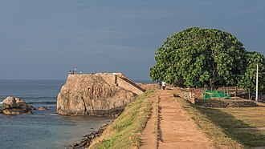

Sigiriya
Biggest Fort in Sri Lanka
In the Bay of Galle on the southwest coast of Sri Lanka, was built first in 1588 by the Portuguese, then extensively fortified by the Dutch during the 17th century from 1649 onwards. It is a historical, archaeological and architectural heritage monument, which even after more than 432 years maintains a polished appearance, due to extensive reconstruction work done by Archaeological Department of Sri Lanka. The fort has a colourful history, and today has a multi-ethnic and multi-religious population.The Sri Lankan government and many Dutch people who still own some of the properties inside the fort are looking at making this one of the modern wonders of the world.The heritage value of the fort has been recognized by the UNESCO and the site has been inscribed as a cultural heritage UNESCO World Heritage Site under criteria iv, for its unique exposition of "an urban ensemble which illustrates the interaction of European architecture and South Asian traditions from the 16th to the 19th centuries." The Galle Fort, also known as the Dutch Fort or the "Ramparts of Galle", withstood the Boxing Day tsunami which damaged part of coastal area Galle town. It has been since restored.
Geography
Galle Fort is in Galle, which is located at the extreme southwest corner of the island, in the southwest coast of Sri Lanka, where the shoreline turns east towards Matara and Tangalle. The fort, like most of the forts in Sri Lanka, is built on a small rocky peninsula, belonging to the sea as much as to the land. As it exists today, it covers an area of 52 hectares (130 acres). Highway A2 provides road links to Galle from Colombo (a distance of 113 kilometres (70 mi)) and the rest of the country along the west coast or from the east along the south coast. Since 2012 an expressway has linked Galle to Colombo. Rail links are also available to Colombo and Matara. Sea route is through the Galle Port at the Galle Harbour.

Demographics
The Galle city (population 112,252, over an area of 16.5 square kilometres (6.4 sq mi)) has developed around the Galle Fort area which covers around 52 hectares (130 acres). The story of the fort is well illustrated by many signages and plaques, which provide information about each monument. More than half of the inhabitants inside the fort are Moor, with Sinhalese, Dutch, English, Portuguese and German settlers. More details regarding the history of the fort can be found at the visitor center and at the Dutch period museum inside the Fort.